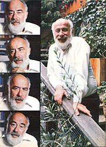

John W. Gofman, Ph.D., M.D., is one of America's most prominent critics of nuclear power. He's performed extensive research on the hazards of radiation . . . given testimony in any number of trials related to atomic power . . . lectured and participated in debates all across the country. . . and written several books on the relationship between nuclear energy and public health.
So it only made sense that, when the folks here at MOTHER were looking for a person who could clearly and authoritatively rebut a series of common pronuclear statements, for a proposed article in this magazine, we'd ask Dr. Gofman to do the answering.
There are, of course, many eloquent spokespersons in the antinuclear movement. . . but John Gofman is unique among them. The San Francisco-based physician/chemist is both a highly respected scientist (the American College of Cardiology selected him as one of the 25 leading heart disease researchers of the past quarter-century) and a person who speaks about the nuclear power industry with firsthand knowledge of its workings . . . since he was, from 1962 to 1972, an Atomic Energy Commission employee whose very job was to study the effect of radiation on human health. What's more, long before Dr. Gofman became known for his research projects on heart disease and radiation, he was actually a member of the Manhattan Project group that produced the world's first atomic weapon!
In other words, this experienced scientist is not a Johnny-come-lately to the antinuclear movement. Instead, he's a man who originally supported atomic energy. . . but who found his views, and his entire life, changed because he held a firm belief in scientific honesty.
We think that you'll find the story behind that change in John Gofman's life - as related in this edited transcript of his interview with MOTHER staffer Pat Stone - to be both significant and moving.
PLOWBOY: Dr. Gofman, you've often been called the father of the antinuclear movement. Do you consider that an accurate title?
GOFMAN: It's not really correct. There were many other people - such as Larry Bogart, the individual who is, I think, the movement's true originator - opposing nuclear power long before I was involved with such resistance.
PLOWBOY: Then why are you frequently given the label?
GOFMAN: Because, in 1969, Arthur Tamplin and I discovered that the risk of contracting cancer - per unit of radiation exposure - was 20 times worse than all the official estimates given at that time. Since we believed that scientists have an obligation to inform the public truthfully, we announced our findings. Our data gave people who were wondering about the safety of nuclear power some concrete evidence to validate their concerns.
But mind you, Art and I weren't trying to conduct a campaign against the atomic power industry. We were concerned simply with protecting people. Most of my life's work has been related to public health . . . in fact - before I began studying the hazards of radiation - I spent several years researching coronary heart disease.
PLOWBOY: You also had a lot to do with the creation of our nation's atomic power capabilities. Would it perhaps be fair to call you one of the fathers of nuclear energy?
GOFMAN: Yes, that actually may be more accurate than calling me a founder of the " anti -nuke" movement. I was a codiscoverer - and helped demonstrate the fissionability - of uranium 233 . . . the third element to be isolated that can be used to provide atomic energy. And, of course, I worked with the Manhattan Project people, who - during World War II - made the first atomic bombs ever exploded.
PLOWBOY: What are the other two elements that can produce atomic power?
GOFMAN: Uranium 235 was the first to be used. The bomb dropped over Hiroshima was based upon U-235, as are virtually all of the atomic reactors in the world today. The other substance is plutonium 239, which was used in the bomb that destroyed much of Nagasaki. The breeder reactors currently being developed are also based on Pu-239.
PLOWBOY: What, then, was the practical significance of your discovery of uranium 233?
GOFMAN: U-233 comes from the mineral thorium, and since there's at least as much thorium in the world as there is uranium, the discovery provided one additional source of atomic fuel. Frankly, I hope people never use it. Nonetheless, in that sense, my work had something to do with contributing to the development of nuclear power.
PLOWBOY: Dr. Gofman, you must have had a remarkable past to have become an important figure in modern heart research, one of the original "atomic" scientists, and one of the key figures in the movement to end the use of nuclear power, as well! Was the beginning of your career an auspicious one?
GOFMAN: No, when I started out, I had a very difficult time finding any job at all! I finished high school during the Great Depression, and after graduation I spent six weeks pounding the pavement in my hometown of Cleveland. I'd go to the personnel department of a company and say, "I was first in my class in high school, I have an interest in science, and I'm looking for work." The people would laugh, and respond, "We can get men with Ph.D. degrees. Why should we want you?"
Then a friend suggested that I study science at nearby Oberlin College - I hadn't even considered going to that school - so I visited the director of admissions and, even though it was August and the rolls were technically closed, managed to talk my way into the freshman class.
I obtained a scholarship to cover my tuition, worked for my room and board, and spent four years at Oberlin. During much of that time I studied under Luke Steiner, an excellent chemist who taught me a great deal about research methods.
After graduating from Oberlin in 1939, I went on to medical school at Cleveland's Western Reserve University - now called Case Western Reserve - for one year, then I took a leave of absence and got a teaching assistantship at the University of California in Berkeley. As soon as I arrived at that school, Dean Gilbert Newton Lewis - a very, very great chemist - said, "I want you to get started on your research project in the next week or two." Well, having to choose a project so quickly scared the daylights out of me, so I scurried around to the various professors in search of a good lead. It was Glenn Seaborg who suggested that I might try to find out whether uranium 233 either existed in nature or could be made.
And that's how I got involved with uranium research. The experiments went well, and the group I worked with was able to discover uranium 233. We produced four one-millionths of a gram of it in the Berkeley cyclotron and proved that it would fission . . . and those results formed the basis of my Ph.D. dissertation.
PLOWBOY: So your interest in chemistry led you from being an unemployed high school graduate to becoming a codiscoverer of a potential source of atomic power.
GOFMAN: Yes, although I wasn't thinking about either atomic bombs or nuclear power when I got into the project. However, while my research was going on, scientists did realize the potential for creating a bomb. So a kind of secrecy curtain came down, and people working with nuclear radiation suddenly quit talking about their experiments.
"At the close of our conversation, he [Congressman Holifield] leaned over to me and said, '. . . we'll get you'."
The government soon became interested in developing an atomic bomb, and began funding research through the Manhattan Project. In connection with that study - again at Glenn Seaborg's suggestion - I began to work with Art Wahl on the chemistry of elements 93 and 94: neptunium and plutonium.
By 1942 I'd become head of a group, in Berkeley, which was developing methods of isolating plutonium from uranium atoms that had been bombarded with neutrons. At the time there was so little plutonium that our research team had never even seen the element. But we were assuming that the proposed atomic reactors would indeed work . . . in which case there'd be a good bit of plutonium created, and there would be a need for methods to isolate enough to fuel a bomb.
PLOWBOY: Did you have any reservations about doing work related to atomic weaponry?
GOFMAN: There was a war on, and I didn't see any immediate prospects of going back into medical school, so I was actually quite happy to be able to work on the Manhattan Project. Then Art Wahl asked me whether I'd like to join the group of scientists who were going - with physicist J. Robert Oppenheimer - to Los Alamos, New Mexico . . . to work on building the actual bomb. I approached Oppenheimer about the matter, and he said, "We'd be delighted to have you as a chemist on this project, but I have to tell you one thing: Because of the enormous secrecy of this work, anyone who goes with us to Los Alamos will be cut off from communication with the outside world for the duration of the war."
PLOWBOY: Whew!
GOFMAN: Of course, nobody then knew whether the conflict would last one year or ten! So I thought the matter over and decided I wouldn't go to Los Alamos. After all, I could contribute to the same project by continuing to work at Berkeley . . . I just wouldn't get to be part of the intimate, actual bombmaking staff. All the other chemists in my group did go off to Los Alamos, though. They'd been down there a couple of months when Oppenheimer came back up and asked me to produce a half-milligram of plutonium.
PLOWBOY: That sounds like such a minute quantity . . . especially when one realizes that there are tons of plutonium in the world now.
GOFMAN: Yes, but at that time a half-milligram was 10 to 20 times the amount of the element in existence! Oppenheimer said that he needed the radioactive material right away for some crucial physics measurements that were vital to the bomb project.
So some other chemists and I surrounded the Berkeley cyclotron with a ton of uranium nitrate and, in order to bombard the uranium with neutrons, ran the machine night and day for about seven weeks. Then we began processing - in ten-pound batches! - the entire ton of uranium nitrate. After three weeks of such work, we had isolated 1.2 milligrams of plutonium in around a quarter of a teaspoon of liquid. We sent most of that off to Los Alamos.
PLOWBOY: Did you take precautionary measures to protect yourselves from radiation?
GOFMAN: No, in that sense it was very, very foolishly done work. We were, of course, under a lot of pressure to get results in a hurry. Let me give you an example of the kind of "safety measures" that were common in those days.
Back when we had first isolated uranium 233 and wanted to learn whether it would fission when bombarded with neutrons, I designed a lead-shielded train that I planned to use for carrying my neutron source - radium and beryllium - up to its "neutron position", where it could be measured, and back. I figured that the lead would protect me from the radioactive material.
I was setting up a special room for the experiments when Glenn Seaborg came in to ask if I'd started making the measurements. I told him that the boys in the shop were pretty busy and wouldn't have my protective transporting train ready for about a month.
"That's ridiculous!" Glenn said. "There's a war going on and you're waiting for a train to be built? Just tie the radium to the end of along stick and use the rod to hold the material away from you so you won't be harmed."
SO I DID THAT. I probably received between 50 and 100 rems of radiation, a huge dose, from my work with the radium. Add that radiation to the amount I was exposed to both during my earlier uranium work and in the course of processing the ton of uranium nitrate that I just told you about . . . and you'll see that I've absorbed enough radiation to make me feel lucky just to have lived this long.
I'm not making that statement lightly, either. Three other scientists in our Berkeley group didn't make it. Joe Kennedy worked with Seaborg and me a great deal, and he died at age 38 of stomach cancer. Joseph Hamilton, who was in charge of the cyclotron we used, died of leukemia in his early 40's. And Bertram Lowbeer, who worked in the lab with radioactive isotopes, died in his 40's . . . also of leukemia.
So, in answer to your question, the safety precautions were terribly lax.
PLOWBOY: You've convinced me. Did you keep working on the bomb project after you finished isolating the material for Oppenheimer?
GOFMAN: For a while. I helped teach plutonium-isolation methods to engineers at the Metallurgical Lab in Chicago and at the Oak Ridge, Tennessee and Hanford, Washington nuclear reactors. But by the end of 1943, I'd pretty much finished with my end of the project. I wanted to get back into medical research, so I returned to school - at the University of California at San Francisco - and later became an assistant professor in the newly formed department of medical physics at Berkeley.
And, when it came time for me to choose a subject for research, I didn't want to work on anything less than a big medical problem. Since cancer and heart disease were then, as they are now, the major threats to the public health . . . I decided to tackle one of them.
I didn't have any good ideas about how to deal with cancer, but I did have some theories concerning the connection between heart disease and cholesterol in the bloodstream. Specifically, I felt that the hardening of the arteries known as arteriosclerosis should be looked into. So I decided to study lipoproteins, which are large molecules consisting of proteins tied to fats.
The instrument I hoped to use to examine those molecules was called an ultracentrifuge. It could spin a substance such as blood serum as fast as 80,000 revolutions per minute . . . and incorporated a special magnifying optical system that allowed the user to actually watch the revolving liquid. When doing so, one could even see molecules migrate to form a protein boundary.
Frank Lindgren and I were working with rabbit blood, but in spite of the fact that the serum had very high - induced - levels of cholesterol, we weren't able to get consistent protein patterns in the ultracentrifuge. We studied the relevant literature and found that the Swedish chemist Kai Pedersen had encountered exactly the same problem. Kai had concluded that unstable molecules in the serum must be breaking up unpredictably and destroying the patterns, so he recommended against studying lipoproteins with an ultracentrifuge.
That didn't seem like a thorough scientific answer to Frank and me, though, so we attacked the problem head on. Now I'm an avid laboratory worker. When I'm researching in the lab, I'm likely to stay there right through the night . . . and Frank and I were up many long evenings trying to puzzle the problem out. But, as we finally discovered, the solution was basically a simple one. The ultracentrifuge readings varied, depending on the salt or sugar content of the serum being examined. All we had to do was add a little salt to the serum, and the lipoproteins we were trying to find would "float" in the ultracentrifuge instead of settling with the other, denser proteins.
As a result of this discovery, we were able to open up a manner of looking at molecules no one even knew had existed. . . discover a whole series of new lipoproteins . . . and, ultimately, provide the basis for a billion-dollar research industry. Today, virtually all heart study depends upon the methods we developed in our lipoprotein project in 1949.
It was that work that won me the American Heart Association's Lyman Duff Award in 1965, and - in 1972 - a share of the Stouffer Prize . . . which was then the highest American award in heart disease research.
After seven more years in that field, though, I grew tired of the whole thing. By that time, I had over 70 staffers running three ultracentrifuges 24 hours a day, and had become a project supervisor instead of a lab researcher.
So I took a year off and wrote three books: Coronary Heart Disease, Dietary Prevention of Heart Disease - with Dr. Alex Nichols and Virginia Dobbins as coauthors - and a popular little book called What We Do Know About Heart Attacks.
I wasn't ready to leave the world of research, however. I became intrigued by the possibility of a relationship between various trace minerals and heart disease, so I turned the lipoprotein study entirely over to Alex Nichols and went back, happily, to lab work. My new research involved using X-ray spectrochemical analysis to examine the trace minerals, and I was making good progress when - late in 1962 - I got involved with atomic energy again.
PLOWBOY: You dropped your heart research project?
GOFMAN: I let myself get talked out of it. John Foster, the director of the Atomic Energy Commission's weapons design facility at the Lawrence Livermore Laboratory, called me up. He wanted me to set up a biomedical division at Livermore that would investigate the overall impact of radiation upon man in the biosphere.
I finally told him I'd accept the job . . . but on one condition: I wanted letters from the president and regents of the University of California saying that anytime I wanted to resume full-time teaching at Berkeley, I could do so. I needed that assurance because I didn't really trust the AEC. Johnny went right to the officials and got the letters for me, and that's how I started studying radiation and human health for the Atomic Energy Commission.
We didn't accomplish anything earth-shaking in our division, but we were all doing good scientific work . . . and I felt I was making some significant advances in the area of which specific chromosome abnormalities can cause cancer.
PLOWBOY: When did you realize the harmful effects of lowlevel radiation?
GOFMAN: Well, back in October of 1969 I was slated to give a talk at the Institute for Electrical and Electronic Engineers. It so happened that Tamplin and I had just completed our cancer and radiation calculations, so I used the results as the topic for my speech. I described the three generalizations we had learned about radiation and health: that all forms of human cancer can be induced by radiation . . . that, per unit of radiation, there's a certain linear percentage increase in the production of cancer . . . and that children are far more susceptible to radiation-induced cancer than are older people. I also explained that our data showed the cancer hazard resulting from radiation to be 20 times worse than we, or anybody, had thought: We calculated that, if everyone in the country received the official "permissible" dose of radiation - which at the time was 170 millirems per year - there would be between 16,000 and 32,000 additional cancer deaths a year in our nation.
With that speech, the AEC's façade - the claim that it really wanted to know the truth about radiation - began to crumble. Actually, I didn't get much publicity from the Institute lecture, but about three weeks later I was invited to testify at Edmund Muskie's Senate hearings on underground uses of nuclear energy. Art and I went up to Washington, and I gave an expanded version of my earlier speech, entitled "Federal Radiation Council Guidelines: Protection or Disaster?".
After we gave our testimony, Ed Bowser - the staff aide to the Joint Committee on Atomic Energy - told us that Chet Holifield would like to see us. Representative Holifield was chairman of the Joint Committee, which oversaw the AEC, and a very powerful guy.
So Tamplin and I went over to see him. We were ushered into a special security-cleared room. Some other congressmen - like Melvin Price, one of the originators of the infamous Price-Anderson Act - were there as well. Art and I sat down - I remember we were seated at a green table opposite Holifield - and the congressman began, "What the hell do you guys think you're doing interfering with the Atomic Energy Commission's program?"
Holifield really hit us with a tirade. When he finished, a staff aide tried to calm him by saying, "Mr. Holifield, these are two of our highly respected scientists from the Livermore Lab." He replied, "I don't give a damn who they are. They're going to have every little old lady in tennis shoes in this country up in arms against the AEC program."
At the close of our conversation, he leaned over to me and said, "Listen, there have been a lot of guys before you two who've tried to interfere with the AEC program. We got them and we'll get you."
PLOWBOY: That's amazing. Did you realize when you gave the testimony at the Senate hearings that you were stepping into such a hornet's nest?
GOFMAN: Well, we knew our findings were worrisome . . . which, of course, is why I thought we ought to present them. And I did suspect that we might have trouble getting continued funding after we'd spoken out. But I didn't think the reaction would be as extreme or as blatant as it was.
PLOWBOY: Looking back on the situation today, you must feel that you were a bit naive.
GOFMAN: I guess I was. Very shortly afterward, I knew we were in a "fight to the death". But not then . . . not even after Holifield's reaction or the discussion I had with Mike May - the man who became director of Livermore after Johnny Foster left - when Tamplin and I got back to the lab.
PLOWBOY: What was the thrust of that conversation?
GOFMAN: May told me that, from then on, the AEC wanted advance notice of anything Art Tamplin and I were going to say or publish . . . so that they'd be able to answer any questions reporters might present in response. I told Mike I didn't mind giving the AEC advance notice, but I wouldn't tolerate any censorship from the agency. Mike stoutly declared that he wouldn't tolerate censorship, either.
So, when Art prepared a paper for presentation at a forthcoming meeting of the American Association for the Advancement of Science, we handed in a copy to the AEC. Well, about three days later Tamplin came into my office, threw the paper down on my desk, and reported that Roger Batzel - who was in charge of the biomedicine division - had come over to see him and, acting on behalf of Mike May, said that if Art wanted to give this paper, he was not to identify himself as a member of the Livermore Lab . . . that he must pay his own transportation to the meeting . . . and that no laboratory staff would be allowed to type the report!
As for the paper itself, just about everything that was of any consequence had been crossed out! The prepositions and conjunctions were left, but not much else. I was really incensed by all this. I went over to Mike May's office and told him how angry I was. After all, we had just talked about not tolerating censorship, and here Roger Batzel and he were actually doing the censoring!
So Mike said, "Jack, why don't you be realistic?" And I told him that I didn't believe in scientific censorship and that I wasn't about to serve as a prostitute for the AEC. I also assured him that, if he went ahead and repressed Tamplin, I would submit a letter to the American Association for the Advancement of Science, explaining that Art would not be at the meeting because his paper was being censored by the Lawrence Livermore Laboratory.
That afternoon I called the people who would be running the AAAS meeting to tell them what might be coming. The next day I told Mike I'd done so, and he got furious and stormed out of my office. That was the end of my relationship with May. We'd been good friends for seven years.
However, Roger Batzel came back to me - a couple of days later - with a modified request. He and Mike had backed off from most of their censorship demands and all their other proposed restrictions on Tamplin. So Art did present his paper at the meeting, and the AAAS didn't have to read any explanatory letter from me.
But within two weeks after Art came back from giving his talk, the AEC reassigned 12 out of his 13 staff workers - against his will - to other researchers.
PLOWBOY: Did the "establishment" ever try to address - instead of repress - your and Art's claims?
GOFMAN: Eventually it did. Robert Finch - secretary of the Department of Health, Education, and Welfare - asked the National Academy of Sciences to prepare a report that would look into the Gofman-Tamplin allegations. So the academy set up a committee on the Biological Effects of Ionizing Radiation, or BEIR, and 60 scientists were invited to be members. Arthur and I, however, were not asked to contribute . . . indeed, we were never once even contacted by the BEIR group.
In 1972, the committee released its report, which estimated that something like 6,000 deaths would be caused by an average nationwide dose of 170 millirems per year. That projection is a good five times lower than our upper figure of 32,000 deaths, and may therefore look like a criticism of our work. But it was regarded in the scientific community, and the world, as a vindication of our research . . . because the Atomic Energy Commission had always stated that there'd be no deaths at all from such a dosage. The report was actually a shattering blow to the AEC.
Now, the reason the BEIR report came up with a fivefold lower casualty rate than we did was that it said we had overestimated by a factor of five the dose that had been received by some irradiated British patients whose case histories figured in our data. But in 1979 the draft of a new BEIR report came out, and that paper cited the same dosage figures that we originally used . . . but nowhere did it mention that the 1972 report was wrong when it criticized Tamplin and Gofman as being off by a factor of five.
PLOWBOY: Did the scientists who compiled the 1979 report come up with the same results as yours?
GOFMAN: No. As a matter of fact - because of some additional nonscientific manipulations of data - they were even further from the truth than before. Our figures on radiation hazard have gone up since that time, and theirs have gone down. I now think the BEIR committee nuclear risk estimates are off by as much as a factor of 50!
And the principal way that the group "phonied up" its 1979 report involved changing the data on Japanese survivors of the World War II atomic explosions. Since there isn't yet much information on the survivors who were 0 to 9 years of age at the time of the bombing - most of them have not yet reached the age at which they're most likely to contract cancer - BEIR workers decided to substitute the data on 20- to 29-year-olds for the figures relating to the younger group. Well, as I told you earlier, one of three main truths about radiation hazard is that children are much more susceptible to harm than are older people. Yet the BEIR committee made the substitution without any scientific basis at all for doing so. In all my career, I've never seen such a blatant violation of accepted procedure . . . it's real scientific hanky-panky.
PLOWBOY: It's hard to believe that respected researchers would do that.
GOFMAN: You can read it yourself. It's all in their draft report. At any rate, Art and I were still employees of the Livermore Lab when, in the spring of 1972, Roger Batzel - who, by the way, once admitted to a TV journalist that even he didn't see any errors in our calculations - came up to me. "Jack," he said, "last year the AEC told us that we'd have to cancel your chromosome and cancer research program. Now you may not believe this, but Mike May and I both said that - although we disagree heartily with you concerning your actions against nuclear power - we think your lab work on chromosomes is first rate, so we're not going to cancel it."
I started to assure Roger that I appreciated his efforts, but he went on: " This year the AEC people have told us that either we cancel your work or they'll simply cut our budget by the $250,000 that your program costs . . . which would force us to fire somebody else in order to keep you."
PLOWBOY: Now that's devious!
GOFMAN: Roger said he'd leave the decision up to me. Well, I couldn't force another project to lose out in order to keep my program. So I told Roger that I thought I might be able to get funding from the National Cancer Institute . . . and asked whether he'd get me the approval to move all my scanners, culture equipment, and other research gear to Berkeley. Roger agreed.
At first, my plan looked as if it would work smoothly. I talked with Frank Rauscher, the head of the National Cancer Institute, and he was quite excited about funding my chromosome work. In fact, Frank said the research would tie in perfectly with some breast cancer studies the Institute was doing at Yale. All he'd need, before giving me the go-ahead, was three or four weeks to look into the funding.
Well, about seven weeks later, I still hadn't heard from him, and - since it was getting near the time when Roger would have to cut his budget - I wrote a little note to remind him . . . and got back a letter, from an assistant I didn't even know, saying, "Thank you very much for your inquiry. The program that you're proposing is not in the mainline interest of the National Cancer Institute. But if you ever have any ideas in the future, please call us."
That was the end of my research. The next day, a program that could have been very important to world health, one that I'd worked on for seven years, was completely dismantled. All the people were reassigned to other scientists' work . . . in fact, to anyone's work as long as it wasn't mine. It was one of the saddest days of my life.
PLOWBOY: Yet nothing was done that you could point to as improper?
GOFMAN: Oh no. Everybody knew, of course, that I didn't want to give up the research program. But I had to. It's really a rather common story: There's just no room for scientific truth in government-funded work when the truth in any way goes against a program that the government - or any of its special interests - wants to carry through. And I believe it's an outrage that we're taxed to support dishonest scientists . . . or to finance science that's being paid to provide a façade.
I was of value to the Atomic Energy Commission because I was a person of prestige whom they could point to and say, "We've got John Gofman studying this hazard question year in and year out." I was an asset to them. . . as long as I didn't say anything!
PLOWBOY: You probably could have studied it forever.
GOFMAN: Certainly. Why, I could've had a $3 to $10 million budget every year if I'd simply gone fishing, played tennis, read books . . . or done anything but report on the topic I was assigned to study.
That sort of information suppression is a violation of human rights and health! I've taken care of a lot of cancer and leukemia patients and know - from personal observation - what a miserable disease cancer is. And realizing that millions of people may get that illness, and lose an average of 15 years from their lives, as the result of an activity that's sponsored by government and for which the government is prepared to buy prostituted information makes me damned angry.
PLOWBOY: Have you done any lab research since 1972?
GOFMAN: No. I can have access to lab facilities at Berkeley for the rest of my life, but I haven't been able to get any financial support from any organization.
I told you how I was turned down when I applied to the National Cancer Institute for $250,000 a year to do chromosome research. In addition, I was later rejected for a $30,000 grant simply to have one person work with me while I continued the kind of calculation Tamplin and I had done on cancer. Still later, I applied for $25,000 to carry on some of my work on heart disease . . . and got turned down on that.
PLOWBOY: It's a tragedy that you haven't been able to continue in laboratory research, considering the excellent work you've done. Furthermore, while we've been talking, I've noticed that your tone of voice becomes very warm and you sound happy whenever you recall laboring on some research project . . . and that when you talk about the government problems you've had, you get vehement and loud. It's easy for me to tell that you prefer working in labs to dealing with politics.
GOFMAN: Yes, I'm fundamentally a "lab type" of person. I'm always "up" when I'm involved in a research project.
PLOWBOY: Would you say you're in forced exile from lab work at present?
GOFMAN: Well ....
PLOWBOY: Let me put it this way: If you had your choice, would you be doing lab research now?
GOFMAN: If I had my choice . . . yes.
PLOWBOY: What have you been doing since you had to leave the Livermore Laboratory in 1972?
GOFMAN: Up through 1975, I was teaching at the university. I've also written a number of papers bringing the work that Tamplin and I did in 1989 and 1970 up to date. I studied data on the workers at the Hanford nuclear facility for a year, and spent another year reexamining my heart attack work in preparation for a major symposium on lipoproteins and heart disease in San Francisco.
And I've just completed the 1,250-page manuscript for my book Radiation and Human Health. My whole purpose in writing that volume is to enable any member of the public to analyze the evidence - the most complicated equation in the text uses nothing more than simple algebra - and understand the radiation issue for him- or herself. I feel strongly that our country needs to "demystify" science . . . and I've tried to take some of the mystery out of the health/ radiation issue with my book.
PLOWBOY: Do you put most of your energy now into fighting nuclear power?
GOFMAN: I give a considerable amount of my time - say, half to three-quarters - to that effort. But I've also come to realize that atomic energy is representative of some much broader issues. Because of nuclear power, everyone in the entire U.S. population is functioning as a guinea pig in a dangerous experiment . . . and worse yet, we're being lied to about the fact that we are being made guinea pigs. So my efforts against nuclear power are now primarily efforts for education on the issues of basic individual human rights.
In fact, one of the reasons that the people in the antinuclear movement have not been able to shut down our country's power plants is that they've focused on the wrong issues. They've concentrated on the economic aspects, the shortage of uranium, or the technical shortcomings in specific plants' safety systems. That's fighting the atomic industry in its own ballpark.
PLOWBOY: So you think that, in a lot of ways, the current antinuclear movement is going in the wrong direction?
GOFMAN: Yes, I do. But let me say that I've made a lot of similar false starts myself between 1970 and now. I've learned, the hard way, that you can't win by pleading with the government for relief . . . the government created the problem! What could be more ridiculous than asking the people who are committing a crime to protect you from it?
PLOWBOY: If we can't expect any help through governmental processes, how can we successfully deal with the dangers of nuclear power and threats to human rights?
GOFMAN: We have to get back to a simple understanding of the concepts of liberty, justice, and truth.
You know, Frederick Douglass - then an ex-slave - made an important statement about power. He said, "Find out just what people will submit to, and you have found out the exact amount of injustice and wrong which will be imposed upon them .... The limits of tyrants are prescribed by the endurance of those whom they oppress."
People have to see the truth in Douglass's words . . . they have to realize that a lot of freedom is being taken away from them, and they have to learn how to take it back.
PLOWBOY: So the first step is education. We Americans have to become aware of how we're being used.
GOFMAN: Yes, but it's not just Americans who need to wake up. We may not have perfect freedom here, but comparing our liberties to those of people in the world's totalitarian countries is like comparing night and day. The journey to full liberty for much of the rest of the world will be a very tough one.
So we need to preserve and extend our own freedoms and help men and women in totalitarian countries resist coercion, as well. All of the world's peoples need to work toward liberty.
PLOWBOY: That sounds like such a difficult goal to accomplish that I feel I have to ask you again, "How do we do it?"
GOFMAN: One way is to help people learn to think that rulers are - by nature - dangerous. Can you think of anything more absurd than the fact that 200 million people in the Soviet Union and 200 million people in the U.S. will tolerate a situation where a group of individuals - called "leaders" - can, in effect, hold them hostage with super-lethal weapons?
And how can the citizens of Russia and the U.S. - to stay with the same example - turn the situation around? They've got to stop looking up to those who seek authority . . . to be repelled by - instead of attracted to-people who crave positions of coercive power. We all need to educate ourselves to the point where we can say, "What, leaders with weapons? That's crazy. We won't tolerate leaders with weapons."
Eliminating the threat of the atom bomb - one of the world's major forms of coercion - is just that simple and that difficult. I'm not saying, however, that the United States alone should rid its leaders of atomic weapons. Anyone who thinks we should disarm unilaterally to set an example for the Russian state doesn't understand what Frederick Douglass said about how power expands to the extent that people let it. If we disarm, the Soviet leaders may well try to make our country a slave state. I don't want that, so - even though I adamantly oppose nuclear power plants - I'm on record as supporting the American atomic weapons program. There will surely never be a solution to human problems by any coercion or force . . . but there will also never be a solution through unarmed freedom as long as powerful bullies exist who will use force.
PLOWBOY: Do you really think that we'll see a much freer world in the future?
GOFMAN: I've been very pessimistic many times, in the last ten years, about the way the world is going . . . but I'm encouraged by recent signs, such as the Polish workers' strike. The things I see tell me that people do have a strong yearning to get back control of their own lives.
So yes, I do think there is a good chance that men and women are going to realize that we need to cope with our lack of freedom and that we can see a much better world in 20 or 30 years . . . even though there may be some real destruction in the interim.
PLOWBOY: I don't know . . . remedying the entire world situation sure sounds like a mighty tall order.
GOFMAN: You keep repeating that solving the problem of human coercion will be difficult. Of course, it will be! But, to my way of thinking, it's the most important issue in the world. Just stop for a minute, you and MOTHER's readers, and ask yourselves: Can you, I, or anyone justify directing all our efforts toward solving trivial problems . . . just because the one we all really need to face is difficult
|
 |
|
|